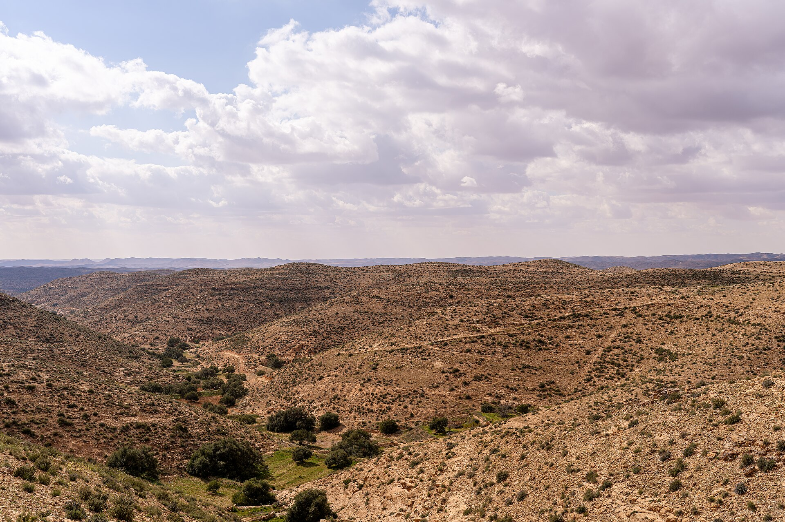

When to Water Olive Trees in Tunisia: A Seasonal Irrigation Guide
By Anis Touati · November 21, 2026 · 8 min read

The short answer: in much of Tunisia, the most important periods to monitor are spring flowering and fruit set, the dry summer months, and early autumn fruit development. But there is no honest one-size-fits-all watering calendar. A young tree in shallow soil near Tunis does not use water in the same way as a mature, widely spaced Chemlali grove in the centre or south of the country.
This guide turns published Tunisian olive research into a practical field routine. It is not a prescription for a fixed number of litres: irrigation needs change with effective rainfall, soil depth, canopy size, variety, tree age, planting density and the crop expected that year.
Why olive watering in Tunisia is different
Olives tolerate dry conditions better than many fruit crops, but drought tolerance is not the same as having no water requirement. Long periods of soil-water deficit can slow shoot growth, affect fruit enlargement and reduce the current or following season's crop. Research on Tunisian orchards repeatedly finds that rainfall timing matters as much as the annual total.
A study by researchers from the Institut National Agronomique de Tunisie and the Institut de l'Olivier examined water use in young trees around Tunis and linked irrigation needs to effective rainfall and canopy development. Other research in central Tunisia compared local and introduced varieties under deficit irrigation and found that the suitable irrigation level varied by cultivar and crop load. The practical lesson is simple: measure the conditions in your grove instead of copying a neighbour's schedule.
The seasonal watering calendar
| Period | What is happening | What to check |
|---|---|---|
| February–March | Bud development and the approach to flowering | Check stored winter moisture. Irrigate only if the root zone is genuinely dry and local conditions justify it. |
| April–June | Flowering, fruit set and early fruit development | Watch soil moisture and avoid allowing a prolonged severe deficit during these sensitive stages. |
| July–August | Hot, dry weather and fruit enlargement | This is often the hardest period for rain-fed trees. If supplemental water is available, use soil and weather data to schedule targeted irrigation. |
| September–November | Fruit growth, oil accumulation and harvest approach | Continue monitoring water stress, but adapt irrigation to variety, harvest timing, soil and crop load. |
| December–January | Winter rest and, in many regions, the main rainfall season | Let effective rainfall replenish the soil. Avoid unnecessary irrigation when the root zone is already wet. |
This is a monitoring calendar, not a universal irrigation prescription. Tunisian studies report meaningful regional differences: for example, the estimated start of supplemental irrigation for young trees differs between Tunis, Nabeul, Béja, Bizerte, Monastir, Gabès and Sidi Bouzid.
Young trees and mature trees should not be watered alike
Newly planted and young olive trees
A young tree has a smaller root system and less soil volume available to it. During establishment, check the root zone more often in hot weather and water deeply enough to wet the developing root area, then allow suitable drainage. Frequent tiny surface splashes can encourage shallow wetting without reliably supplying the roots.
Do not assume that a young tree needs the same volume as a mature tree. Its canopy, rooting depth and planting soil are different. A simple field record — date, rainfall, soil condition and irrigation applied — is more useful than a rigid schedule copied from another farm.
Mature olive trees
Mature trees can explore a much larger soil volume, and traditional Tunisian orchards have long relied on rainfall and careful land management. Their irrigation needs still vary: a dense, irrigated orchard is not comparable with a low-density rain-fed grove. The expected crop also matters, because an “on” year and an “off” year can change the value of supplemental water.
How to decide whether irrigation is needed
- Record rainfall, not just the forecast. A short shower may wet only the surface. Note how much rain actually reached the grove and whether it penetrated the root zone.
- Check soil below the surface. Inspect more than one representative spot and depth. A dry crust does not prove the whole root zone is dry; a damp surface does not prove deeper soil has enough moisture.
- Account for tree age and canopy. Larger canopies and different planting densities change water use. Young trees need a separate plan from mature trees.
- Use local weather and evapotranspiration data where possible. Irrigation scheduling based on reference evapotranspiration (ET₀), crop coefficients and effective rainfall is more defensible than a fixed weekly timer.
- Apply water efficiently. Drip or other localized systems can target the active root area. Check emitters, leaks and pressure, and avoid runoff or prolonged waterlogging.
- Keep a seasonal log. Record the date, amount, method, rainfall and tree response. Compare similar blocks rather than assuming every cultivar or soil behaves the same.
What Tunisian research says about irrigation amounts
Published experiments do not support one national litres-per-tree figure. A central Tunisia study of five olive varieties reported good vegetative growth and production under different deficit-irrigation treatments, with responses depending on variety. A separate study around Tunis developed a way to estimate water needs for young trees using effective rainfall and canopy development. These findings are useful because they show why irrigation must be adapted to the orchard — not because their experimental numbers should be copied blindly to every farm.
For a commercial or community grove, a qualified local agronomist can combine soil texture, rooting depth, water quality, local weather data and the available water allocation to calculate a safer schedule. Water scarcity is a real constraint in Tunisia; efficient irrigation protects both the trees and the resource.
Common olive-watering mistakes
- Watering by the calendar alone: the same day each week can overwater after rain and underwater during a heatwave.
- Copying another region's schedule: rainfall patterns and soils differ significantly across Tunisia.
- Ignoring the soil: irrigation should respond to moisture in the root zone, not just leaf appearance or surface dust.
- Applying too much at once: water that runs off or drains beyond the useful root zone is wasted.
- Forgetting the water source: check the legal availability, quality and sustainability of the water before expanding irrigation.
How this applies to our grove
Our project is based on a young olive grove in Tunisia, so establishment, water access and efficient delivery are central to the work. The farm's water-well project explains the planned water infrastructure, while the projects page sets out the wider development phases. We will continue documenting the grove rather than presenting a generic irrigation formula as if it were a measured result from our land.
If you are following a tree's development, our guide to how long an olive tree takes to bear fruit explains the establishment and production stages. For harvest timing, see when to harvest olives for oil.
Frequently asked questions
When should olive trees be watered in Tunisia?
Monitor spring flowering and fruit set, the dry summer fruit-growth period, and early autumn. The exact timing depends on region, rainfall, soil, tree age, variety and crop load.
Do olive trees need water in summer?
Summer is commonly the driest period in Tunisian olive-growing regions. Supplemental irrigation may be valuable where available, but schedule it using soil moisture and local weather data rather than a universal weekly rule.
How often should a young olive tree be watered?
Check young trees more frequently during hot, dry weather because their roots occupy less soil. Water when the root zone is beginning to dry, and adjust after rainfall. Soil and planting conditions determine the interval.
Can olive trees grow without irrigation in Tunisia?
Yes. Many traditional groves are rain-fed. Their results depend on rainfall distribution, soil water storage, tree spacing, variety and management. Supplemental irrigation is an option, not a requirement for every grove.
Research and further reading
- Water requirements of individual olive trees in relation to canopy and root development — research by the Institut National Agronomique de Tunisie and Institut de l'Olivier.
- Vegetative and reproductive behaviour of olive varieties under deficit irrigation in semi-arid central Tunisia — cultivar-specific experimental findings.
- Rainfall distribution functions for irrigation scheduling in Tunisian olive-growing regions — regional rainfall and crop-stage analysis.
This article is educational and is not a farm-specific irrigation prescription. Confirm water availability, local regulations and the correct schedule with a qualified agronomist before making operational decisions.